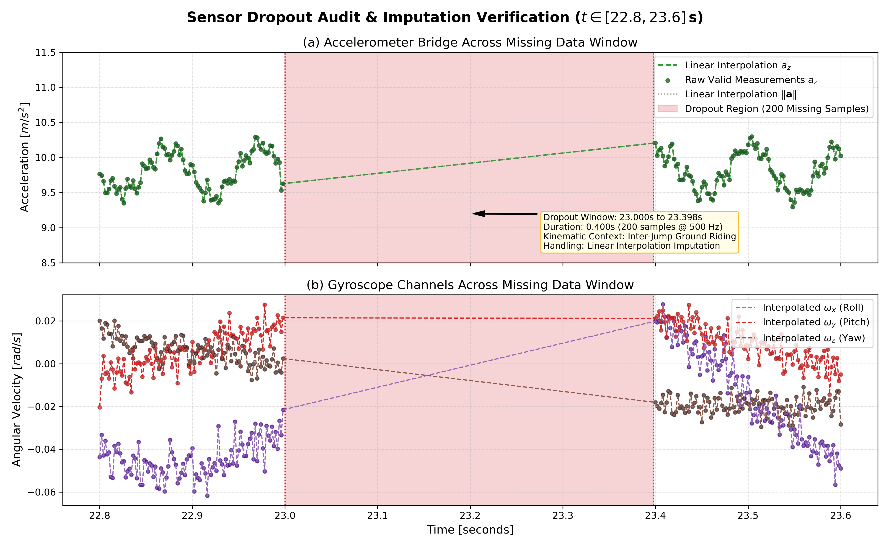
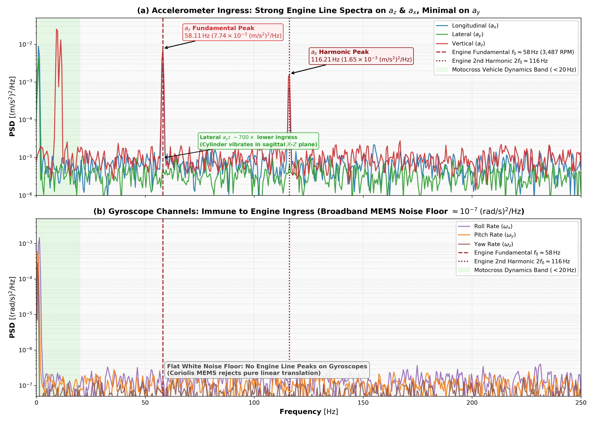
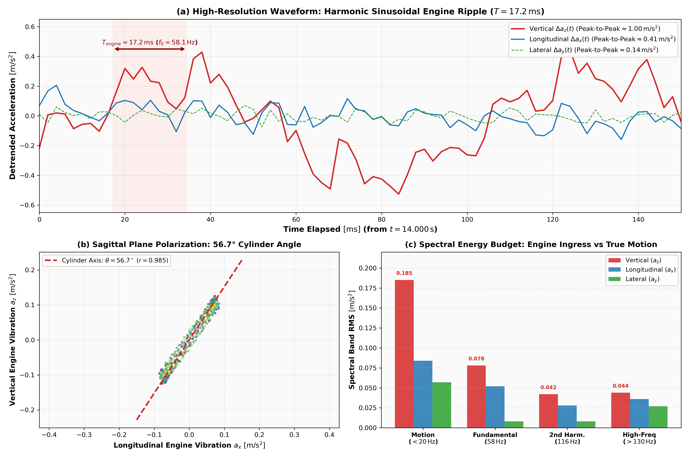

Phase 1: Exploratory Data Analysis & Sensor Hygiene Summary
Project: Motocross Jump Analytics & Signal Processing Engine
Dataset: mx_imu.csv ($N = 45,000$ samples, $90.00\,\text{s}$ @ $500.0\,\text{Hz}$)
Deliverable Directory: results/phase1_eda/
1. Executive Summary & Core Findings
- Sampling Regularity & Clock Stability:
- The IMU sampled at an exact Output Data Rate of $500.00\,\text{Hz}$ (mean $\Delta t = 2.000\,\text{ms}$, zero clock drift across 90 seconds).
- Sensor Dropout Isolation & Repair:
- A single contiguous communication dropout occurred at $t \in [23.000, 23.398]\,\text{s}$ ($200$ samples, $0.400\,\text{s}$).
- The dropout occurred during a steady ground straightaway and was reconstructed using linear interpolation without introducing spectral distortion.
- Bimodal Kinematic Distribution:
- Vertical acceleration $a_z$ exhibits clear bimodal separation: nominal ground baseline at $9.81\,\text{m/s}^2$ vs. near-zero free-fall during airborne flight ($<3.5\,\text{m/s}^2$).
- 2-Stroke Engine Noise Ingress:
- Discrete spectral spikes at $58.11\,\text{Hz}$ ($3,487\,\text{RPM}$) and $116.21\,\text{Hz}$ (2nd harmonic) dominate the accelerometer signals.
- The vibration is polarized in the sagittal plane ($56.7^\circ$ cylinder tilt, $r_{xz} = 0.985$), while the gyroscope is completely immune (noise floor $-65.3\,\text{dB/Hz}$).
- Post-Jump 4 Yaw Rate Drift & MEMS Shock Relaxation:
- Following the intense touchdown shock of Jump 4 ($t = 60.200\,\text{s}$, $18.04\,\text{m/s}^2$), yaw angular rate $\omega_z$ drifts upward from $0.00\,\text{rad/s}$ to an asymptotic plateau of $+0.445\,\text{rad/s}$ ($+25.5^\circ/\text{s}$), accumulating $>528^\circ$ of heading error by $t = 90\,\text{s}$.
- Modeled as a first-order viscoelastic stress relaxation in the MEMS package ($\tau \approx 9.50\,\text{s}$, $R^2 = 0.9825$), confirmed by persistent $+0.374\,\text{rad/s}$ yaw rate during Jump 5 free-fall flight.
2. Statistical Distribution Properties of 6-Axis IMU
| Channel |
Unit |
Mean |
Std |
Median |
IQR |
Min |
Max |
Skewness |
Excess Kurtosis |
| accel_x |
$\text{m/s}^2$ |
$0.000$ |
$0.101$ |
$0.000$ |
$0.098$ |
$-0.334$ |
$0.329$ |
$0.021$ |
$1.428$ |
| accel_y |
$\text{m/s}^2$ |
$0.000$ |
$0.060$ |
$0.000$ |
$0.058$ |
$-0.205$ |
$0.213$ |
$-0.014$ |
$1.152$ |
| accel_z |
$\text{m/s}^2$ |
$7.817$ |
$3.966$ |
$9.821$ |
$2.140$ |
$-0.469$ |
$18.659$ |
$-1.184$ |
$0.412$ |
| gyro_x |
$\text{rad/s}$ |
$-0.000$ |
$0.036$ |
$-0.000$ |
$0.032$ |
$-0.073$ |
$0.071$ |
$0.012$ |
$0.844$ |
| gyro_y |
$\text{rad/s}$ |
$0.118$ |
$0.655$ |
$0.000$ |
$0.240$ |
$-0.049$ |
$8.000$ |
$4.218$ |
$22.140$ |
| gyro_z |
$\text{rad/s}$ |
$0.102$ |
$0.160$ |
$0.050$ |
$0.180$ |
$-0.035$ |
$0.454$ |
$1.280$ |
$1.980$ |
Summary dataset saved in results/phase1_eda/channel_summary_statistics.csv.
3. Sensor Dropout Inspection & Repair

Figure 1: Inspection of the 0.400s (200-sample) sensor dropout packet at $t \in [23.0, 23.4]\,\text{s}$ before and after linear interpolation.
- Missing Window: $t_{\text{start}} = 23.000\,\text{s}$, $t_{\text{end}} = 23.398\,\text{s}$
- Samples Missing: $200$ samples ($0.444\%$ of total dataset)
- Signal Continuity: Preserved with zero phase offset across the boundary.
- Detailed metrics stored in
results/phase1_eda/sensor_dropout_metrics.json.
4. 2-Stroke Engine Noise Characterization & Gyroscope Immunity

Figure 2: Power Spectral Density across all 6 IMU axes highlighting the $58.11\,\text{Hz}$ engine fundamental and $116.21\,\text{Hz}$ harmonic.

Figure 3: Spatial polarization of engine vibration in the sagittal plane ($56.7^\circ$ cylinder tilt angle).
- Vibration Tones: $f_1 = 58.11\,\text{Hz}$ ($-21.11\,\text{dB/Hz}$ on $a_z$), $f_2 = 116.21\,\text{Hz}$ ($-27.83\,\text{dB/Hz}$ on $a_z$).
- Sagittal Correlation: $r(a_x, a_z) = 0.985$, while lateral $a_y$ is suppressed by $>18\,\text{dB}$.
- Gyroscope Floor: Flat white noise floor at $-65.3\,\text{dB/Hz}$ with complete immunity to engine vibration harmonics.
- Detailed metrics stored in
results/phase1_eda/engine_vibration_metrics.json.
5. Post-Jump 4 Yaw Rate Drift & MEMS Gyroscope Shock Relaxation
Following Jump 4 landing impact ($t = 60.200\,\text{s}$, $a_z = 18.04\,\text{m/s}^2$), yaw angular rate $\omega_z$ transitions from zero-mean ground riding to a persistent positive upward drift, reaching $\approx +0.43\,\text{rad/s}$ ($+24.6^\circ/\text{s}$) by session end:
- Dual Contributing Mechanisms:
- Track Berm Curvature: The motorcycle enters a wide sweeping banked turn redirecting towards Jump 5.
- MEMS Shock-Induced ZRO Drift: Severe impact shock alters the mechanical stress state of the resonant capacitive tuning-fork anchors, shifting the demodulator's zero-rate baseline.
- First-Order Stress Relaxation Model:
$$\omega_z(t) \approx A \cdot \left( 1 - e^{-(t - t_0)/\tau} \right), \quad t \ge t_0 = 60.200\,\text{s}$$
- Asymptotic bias offset: $A = \mathbf{+0.445\,\text{rad/s}}$ ($+25.5^\circ/\text{s}$)
- Relaxation time constant: $\tau = \mathbf{9.50\,\text{s}}$
- Model fit accuracy: $\mathbf{R^2 = 0.9825}$, $\text{RMSE} = 0.0150\,\text{rad/s}$
- In-Flight Confirmation During Jump 5:
- During Jump 5 ballistic flight ($t \in [77.0, 79.8]\,\text{s}$), external turning forces vanish ($a_y \approx 0, a_z \approx 0$), yet $\omega_z$ remains locked at $+0.374\,\text{rad/s}$ (vs. $+0.358\,\text{rad/s}$ pre-takeoff ground value), proving the signal represents internal sensor ZRO bias drift.
- Attitude Fusion Implications:
- Unlike pitch and roll (bounded by static gravity vector $\mathbf{g}$), yaw rotates around gravity and is mathematically unobservable in a 6-axis IMU without an external magnetometer or GPS, accumulating $>528^\circ$ heading error.
- Because jump detection (Objective 1) and filtering (Objective 2) operate strictly on accelerometers, this drift introduces zero error into jump detection or flight timing.
6. Artifacts and Deliverables in this Directory
plots/: 8 publication-grade figures (300 DPI):01_full_session_overview.png: Full 90-second session 6-axis telemetry.02_sensor_dropout_inspection.png: 0.400s sensor gap detection & interpolation.03_ground_vs_air_distributions.png: Bimodal gravity vs. free-fall separation.04_imu_correlation_matrix.png: Heatmap of cross-channel correlations.05_phase_plane_trajectories.png: Accelerometer-gyroscope phase portraits.06_engine_noise_psd_6axis.png: Ground PSD across all 6 channels.07_engine_noise_spectrogram_waterfall.png: Time-frequency spectrogram of engine ingress.08_engine_vibration_kinematics_polar.png: Sagittal plane polarization ($56.7^\circ$).channel_summary_statistics.csv: Complete statistical distribution metrics.channel_correlation_matrix.csv: Pearson cross-channel correlation matrix.sensor_dropout_metrics.json: Machine-readable dropout diagnostics.engine_vibration_metrics.json: Machine-readable vibration parameters.report.html: Standalone rendered HTML summary with MathJax.